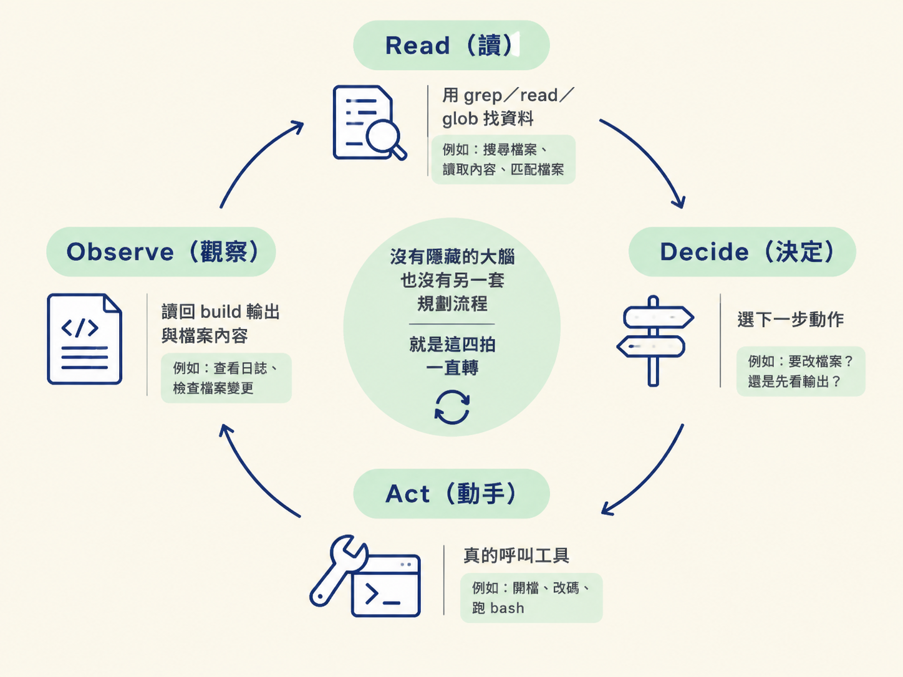
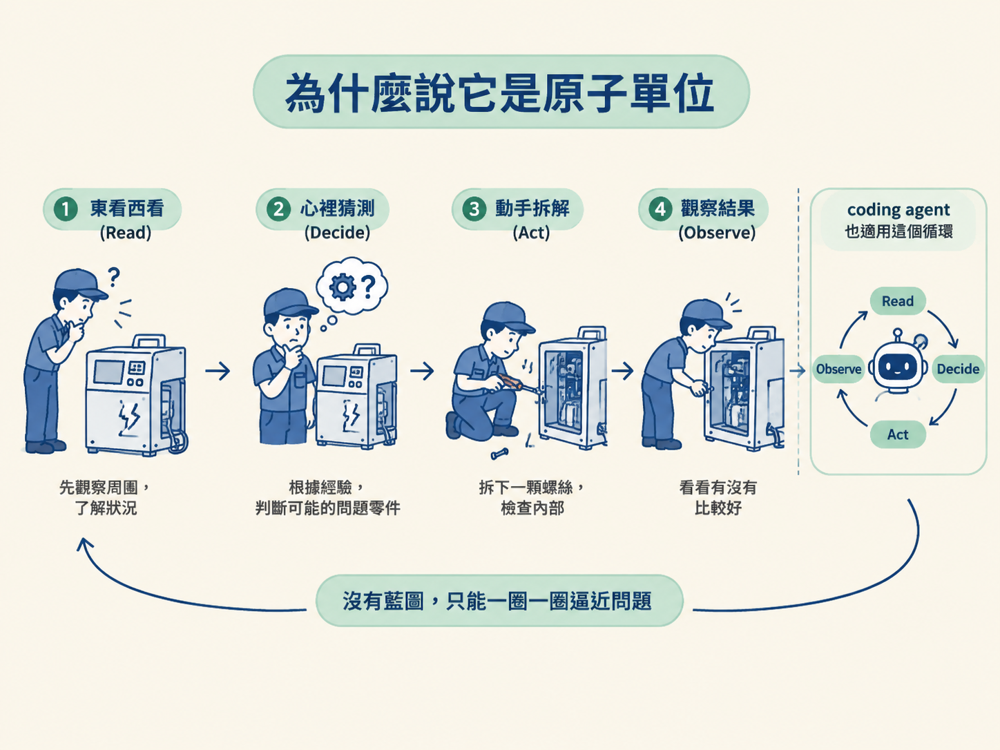

能說出每個 coding agent 共用的 Read→Decide→Act→Observe 迴圈，並解釋為什麼這一圈是它所有行為的原子單位。
你已經在 Claude Code 或 opencode 裡按過無數次 Enter 了。輸入一句話，等個幾秒，它開始動：搜檔案、開檔案、跑指令，最後回頭給你一段話。整個過程看起來像魔法，好像背後藏著一個什麼都懂的大腦。
但底下其實只有一件很單純的事在反覆發生。這一節要把那件事拆開，原因很直接：你不會指揮一個自己看不懂的東西。上一節我們把心態立起來了：你要當架構師，去指揮 AI，而不是許願。那個「指揮」的對象，就是這一節要講的迴圈。
不論你用的是哪一套工具，每個 coding agent 都跑同一個迴圈，只有四拍：Read（讀）、Decide（決定）、Act（動手）、Observe（觀察）。它會一遍又一遍地跑，直到任務完成。整台機器就這麼簡單。
先看第一拍 Read。它一開始什麼都不知道，不知道按鈕寫在哪個檔案、auth 邏輯放在哪裡。所以它得先去讀：用 grep 搜尋文字、用 read 打開檔案、用 glob 依檔名找檔案。它會一直讀，讀到「手上有東西可以動」為止。
第二拍是 Decide。讀完之後它停下來，選下一步要做什麼。例如它看到按鈕元件裡掛了一個 on-click handler，於是決定「去查那個 handler 到底呼叫了什麼」。這一步選得好不好，完全取決於它剛剛讀到的東西完不完整。這點我們下一節會回來算帳。
第三拍是 Act。決定之後，它真的動手，而且這裡的「動手」是真的在做，不是講講。它會呼叫工具：打開檔案、改程式碼、用 bash 跑型別檢查或整個 build。開檔案本身就是一次動作（一個 tool call），它不是在描述自己「打算」怎麼做，而是正在做。
最後一拍是 Observe。做完之後，它看剛剛回來的結果：build 有沒有報錯、打開的那個檔案裡寫了什麼、指令吐出了什麼訊息。這一拍的產出，就變成下一圈 Read 的起點。然後迴圈再跑一次。
| 階段 | 它在做什麼 | 具體長相 |
|---|---|---|
| Read | 蒐集資訊 | grep 搜字、read 開檔、glob 依檔名找檔案 |
| Decide | 選下一個動作 | 看著現有線索，決定下一步該查什麼 |
| Act | 真的動手 | 開檔、改碼、用 bash 跑型別檢查與 build |
| Observe | 看結果回來 | 讀 build 輸出、看檔案內容，當成下一圈的起點 |
要注意，這四拍裡沒有藏在後面的「大腦」，也沒有另一套獨立的規劃流程。它就是這四拍一直轉。你看到 agent 做的每一件事，都只是其中某一拍的具體樣貌。

把這一圈想成 agent 所有行為的最小單位。一個五分鐘就能解決的小任務，大約會跑八圈；一個複雜的功能，可能跑到八十圈。你感受到的「它好像想了一下、查一查、再改一改」，其實就是這八圈或八十圈堆出來的。
換個譬喻：把它想成一個剛到職、沒有交接文件的維修師傅。他看到一台壞掉的機器，先東看西看（Read），心裡猜哪個零件有問題（Decide），動手拆下一顆螺絲（Act），拆完看看有沒有比較好（Observe），然後再回到「看」。他沒有藍圖，只能一圈一圈逼近問題。 agent 就是這個師傅，只差在它認路的方式我們下一節會專門講。

不論哪一套工具，coding agent 都跑同一個 Read→Decide→Act→Observe 迴圈，反覆到任務完成。這一圈是原子單位：五分鐘任務約八圈，複雜功能約八十圈。Read 是蒐集、Decide 是選下一步、Act 是真的呼叫工具、Observe 是把結果接回下一圈。
把這一圈記牢，因為它是後面每一課的底圖。所謂「當架構師、去指揮它」，指揮的對象其實就是這個迴圈。你真正能碰到的，是它讀了什麼、它怎麼決定，還有你怎麼檢查它觀察到什麼。下一節不談理論了，直接拿一個按鈕按下去沒反應的真實 bug，看這四拍在畫面上長什麼樣。